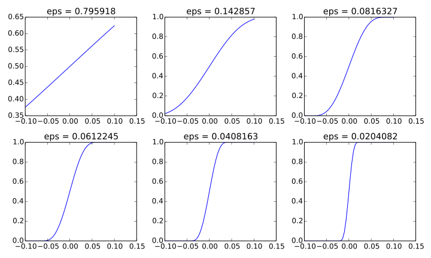

2.3. If-Else Koşullu Yapısı
Kayıt Tarihi:
Son Güncelleme:
Bu derste programlarımızın farklı senaryolara göre farklı şekilde çalışmasına olanak sağlayan dallanma (branching) konusunda değineceğiz. Bir çok programlama dilinde olduğu gibi bunu Python'da da if-else blokları ile yaparız.
Bilgisayar programlamada sıklıkla programnın dallanması gerekir. Yani bir koşul sağlanırsa bir iş, başka bir koşul sağlanırsa başka bir iş yapılır. Matematiksel olarak Heaviside fonksiyonu olarak adlandırılan ve aşağıdaki gibi tanımlanam fonksiyonu bu duruma örnek gösterebiliriz.
$$ H(x)= \left\{ \begin{array}{ll} 0, & \quad x < 0\\ 1, & \quad x\geq 0 \end{array} \right. $$Basit Dallanmalar
Python programlarında dallanmalar if-else blokları yardımıyla kodlanır. Aşağıdaki programda basit bir if-else yapısının kullanımı örnekleniyor.
x = 1E-15
if x < 0:
H = 0
else:
H = 1
print "x = %g\tH(x)=%g" % (x, H)
Şimdi yukarıdaki programda kullandığımız kodları açıklayalım. Programda dallanma 5-7 numaralı satırlarda oluşmaktadır. Bir if-else yapısı if kelimesini takip eden bir bool nesnesinden oluşan bir satırla başlar. Bunun altında bulunan ve daha sağdan hizalanmış satırlarda bulunan kodlar, eğer belirtilen bool nesnesi True değerine sahip ise çalıştırılır. Eğer bool nesnesi False ise bu blokta aynı hizada bulunan kodlar çalıştırılmaz. Bu bloktan sonra if kısmı ile aynı şekilde hizalanmış ilk satırda else: ifadesi ile karşılaşılırsa, belirtilen bool nesnesi değeri False olması durumunda bu satırın altındaki farklı hizalı satırlardaki kodlar çalıştırılır. else kısmı zorunlu değildir, eğer bu kısım yoksa bool nesnesi True ise if kısmında belirtilen kodlar çalıştırılır fakat bool nesnesi değeri False ise hiç bir şey yapılmaz. Örneğin aşağıdaki program da yukarıdaki ile aynı çıktıyı üretir.
x = 1E-15
H = 1
if x < 0:
H = 0
print "x = %g\tH(x)=%g" % (x, H)
Yukarıdaki programda print ifadesinde kullandığımız \t komutu Python'da özel bir karakterdir ve bir tab uzunluğunda boşluk vermek için kullanılır. Bu tür karakterlere kaçış (escape) karakterleri denir, diğer bir sık kullanılan kaçış karakteri \n'dir ve yeni bir satıra atlamayı sağlar. Yukarıdaki programlar aşağıdaki gibi bir sonuç üretir.
Terminal > python ifelse1.py
x = 1e-15 f(x)=1
Bu fonksiyonun değerlerini farklı $x$ değerleri için yazdıran bir program yazalım, bunu bir for döngüsü ile yapabiliriz.
xlist = [-1 + k*0.2 for k in range(10)]
for x in xlist:
if x < 0:
H = 0
else:
H = 1
print "x = %4.1f\tH(x)=%g" % (x, H)
Bu programın çıktısı aşağıdaki gibi olacaktır. Burada print ifadesinin bulunduğu satırı for döngüsü içinde yazdık, bundan dolayı her bir tekrarda yazdırma işlemi yapılıyor.
Terminal > ifelse3.py
x = -1.0 H(x)=0
x = -0.8 H(x)=0
x = -0.6 H(x)=0
x = -0.4 H(x)=0
x = -0.2 H(x)=0
x = 0.0 H(x)=1
x = 0.2 H(x)=1
x = 0.4 H(x)=1
x = 0.6 H(x)=1
x = 0.8 H(x)=1
Yukarıda ele aldığımız Heaviside fonksiyonu matematikte yaygın olarak kullanılmasına rağmen bazı dezavantajları vardır, örneğin bu fonksiyon $x=0$ noktasında süreksizdir. Bazı uygulamalarda bu fonksiyon yerine $$ H_\epsilon(x)= \left\{ \begin{array}{ll} 0, & \quad x<-\epsilon\\ \frac{1}{2}+\frac{x}{2\epsilon}+\frac{1}{2\pi}\sin\left( \frac{\pi x}{\epsilon} \right), & \quad -\epsilon\leq x\leq\epsilon\\ 1, & \quad x>\epsilon \end{array} \right. $$ olarak tanımlanan $H_\epsilon$ fonksiyonu kullanılabilir. Bu fonksiyon yeterince küçük $\epsilon$ değerleri için Heaviside fonksiyonuna yakın davranır hem kendisi hem de türevi tüm reel eksende süreklidir. Böyle bir dallanmayı Python'da yapmak için iki koşullu yapı kullanabiliriz.
from math import sin, pi
x = 0.5
epsilon = 1E-12
if x < -epsilon:
H = 0
else:
if x <= epsilon:
H = 0.5 + x/(2*epsilon) + 1.0/(2*pi)*sin(pi*x/epsilon)
else:
H = 1
print "x = %4.1f\tH(x)=%g" % (x, H)
Aşağıda Heaviside fonksiyonunun farklı epsilon değerleri için grafiklerini görebilirsiniz.
Çoklu Dallanmalar
Böyle çoklu dallanmalarla sık karşılaşıldığı için Pythpn'da bunlar için kısa bir yol vardır, bu da elif (else if) yapısıdır. Kullanımını aşağıdaki örnek üzerinde gözlemleyelim, bu örnek ile yukarıdaki program aynı şekilde çalışır.
from math import sin, pi
x = 0.5
epsilon = 1E-12
if x < -epsilon:
H = 0
elif -epsilon <= x <= epsilon:
H = 0.5 + x/(2*epsilon) + 1.0/(2*pi)*sin(pi*x/epsilon)
else:
H = 1
print "x = %4.1f\tH(x)=%g" % (x, H)
Yukarıdaki program için de bir döngü kullanarak bir tablo yazdıarbiliriz, bunu aşağıdaki kodlarla sağlarız.
from math import sin, pi
epsilon = 1E-12
xlist = [-.1 + k*0.02 for k in range(10)]
for x in xlist:
if x < -epsilon:
H = 0
elif -epsilon <= x <= epsilon:
H = 0.5 + x/(2*epsilon) + 1.0/(2*pi)*sin(pi*x/epsilon)
else:
H = 1
print "x = %4.1f\tH(x)=%g" % (x, H)
Bu kodlar aşağıdaki çıktıyı üretecektir. Görüleceği gibi $H_\epsilon$ fonksiyonu bire bir $H$ ile aynı değerler vermiyor, ama oldukça yakın bir davranıştadır.
Terminal > heaviside_eps3.py
x = -0.1 H(x)=0
x = -0.1 H(x)=0
x = -0.1 H(x)=0
x = -0.0 H(x)=0
x = -0.0 H(x)=0
x = 0.0 H(x)=0.5
x = 0.0 H(x)=1
x = 0.0 H(x)=1
x = 0.1 H(x)=1
x = 0.1 H(x)=1
Başka bir örnek olarak $$ N(x)= \left\{ \begin{array}{ll} 0, & \quad x<0\\ x^2\sin(x), & \quad 0\leq x<1\\ 3-x, & \quad 1\leq x<2\\ 0, & \quad x\geq 2 \end{array} \right. $$ fonksiyonu işlemini aşağıdaki dallanma örneği ile elde edebiliriz.
from math import sin, pi
x = pi/2
if x < 0:
N = 0
elif 0 <= x < 1:
N = x**2*sin(x)
elif 1 <= x <2:
N = 3 - x
else:
N = 0
print "x = %4.3f\tH(x)=%g" % (x, N)
Burada $(0,2]$ aralığı dışında fonksiyonun 0 değer aldığını kullanarak bu kodları biraz kısaltabiliriz.
from math import sin, pi
x = pi/2
N = 0
if 0 <= x < 1:
N = x**2*sin(x)
elif 1 <= x <2:
N = 3 - x
print "x = %4.3f\tH(x)=%g" % (x, N)
Bu iki programın da çıktısı aşağıdaki gibi olacaktır.
Terminal > python ifelse5.py
x = 1.571 H(x)=1.4292
Satır İçi Dallanma
Programlardaif-else bloklarını çok sık kullandığımıdan Python'da bunun tek satırlık bir kısa yolu vardır. H = (0 if x < 0 else 1) komutu H değişkenine Heaviside fonksiyonunun sonucu olan sayıyı atar.
xlist = [-1 + k*0.2 for k in range(10)]
for x in xlist:
H = (0 if x < 0 else 1)
print "x = %4.1f\tH(x)=%g" % (x, H)
2.2. For Döngüleri
Python ve Bilimsel Hesaplama
3.1. Python Fonksiyonları